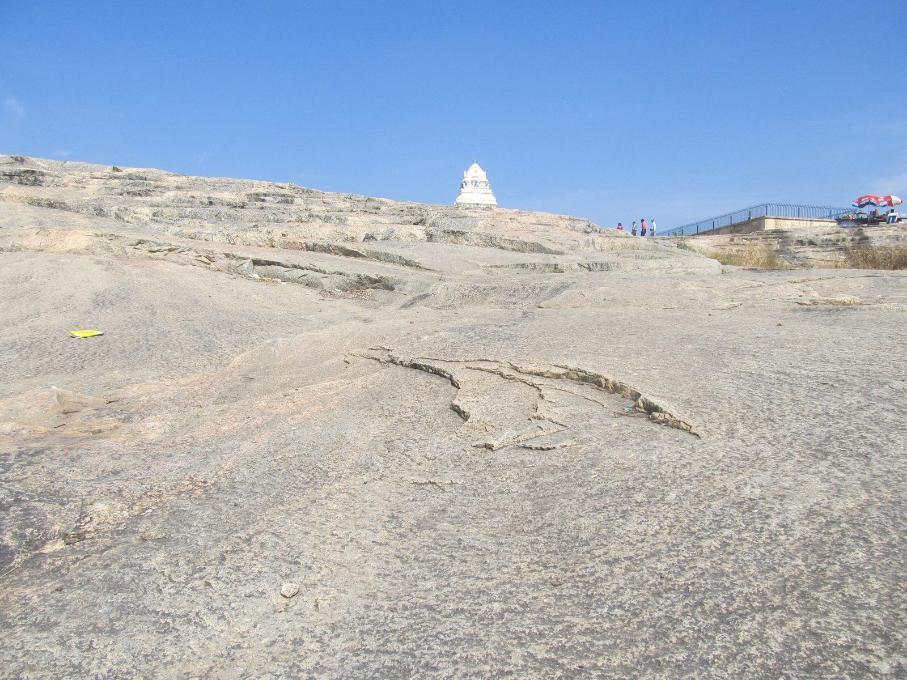

The Peninsular Gneiss
The grey banded gneisses that floor the southern peninsula are among the oldest rocks in India; the hill in Bengaluru’s Lalbagh garden is their classic exposure, protected as a national geological monument.

Under everything else in this collection lies grey gneiss: a banded, streaky rock formed when granites and older crust were kneaded together at depth, exposed today wherever the cover has worn away between Bengaluru, Mysore and the Tungabhadra. Geologists call it the Peninsular Gneiss, a name fixed by W. F. Smeeth of the Mysore Geological Department in 1916, and its classic exposure is a piece of civic furniture – the whaleback hill in the Lalbagh botanical garden in Bengaluru, protected as a national geological monument. Radiometric dates from the gneisses run from about 3,400 to 2,500 million years, with some components older still; they record not one event but a series of remeltings spread over most of a billion years.
The gneiss is the reason the southern Deccan behaves as it does. Rock this old and this thoroughly worked is cold, thick and stable – a craton – and cratons neither fold into young mountains nor subside into deep basins; they persist, wearing down slowly, while events happen on top of them and around their edges. The subdued, boulder-strewn uplands of the southern plateau, the shallow soils, the bare grey sheets that carry the hill forts of the later timeline – these are the surface manners of a craton.
The banding itself is the archive. Each grey and pale stripe is a pulse of melting or deformation, and unpicking their sequence – which band cuts which – is done exactly as a historian collates chronicles, except that the dates come from uranium and lead. The collection therefore starts here, with a rock whose biography was already complete before there was an atmosphere worth breathing above it.
In the story
Every later entry stands on this one. The craton’s stability is why the Deccan’s history is a story of surfaces – lava poured on it, soils formed from it, forts built of it – rather than of the ground itself convulsing; the plateau’s role as history’s stage begins with the gneiss that made it rigid.